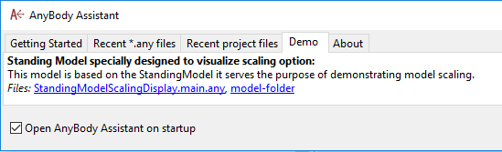
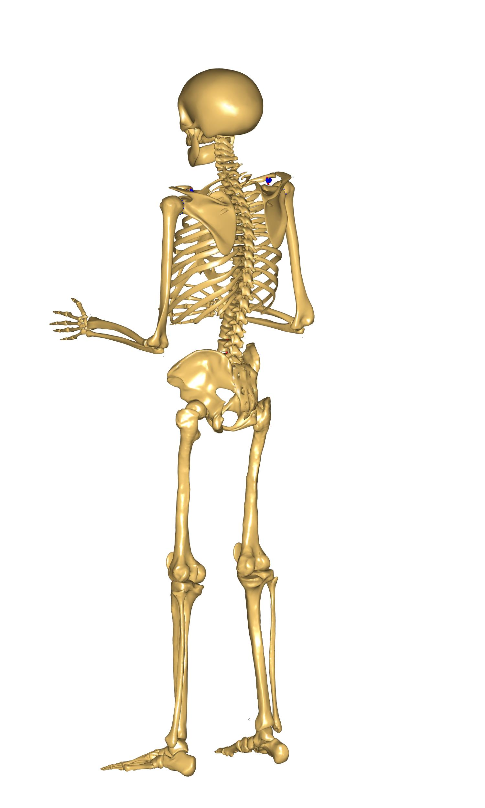
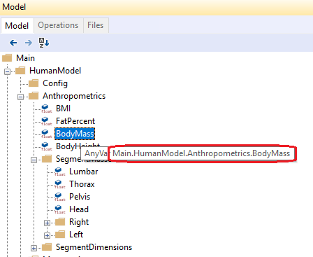
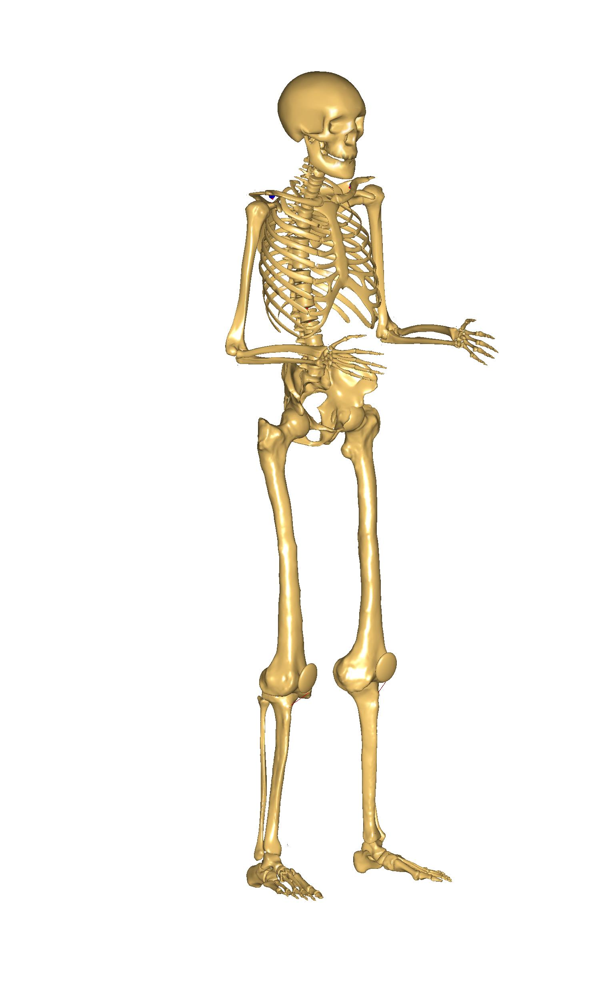
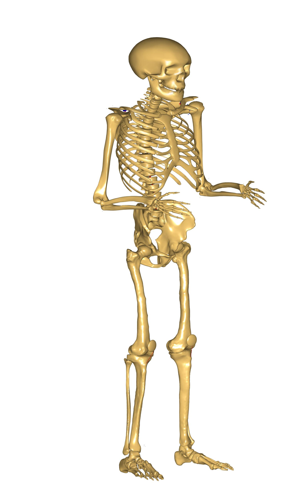
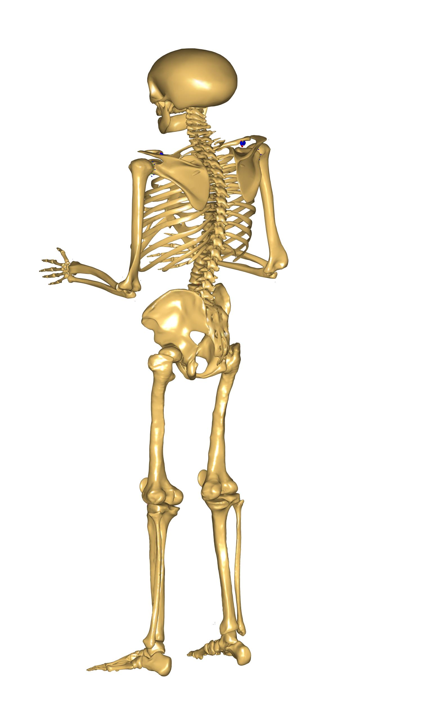
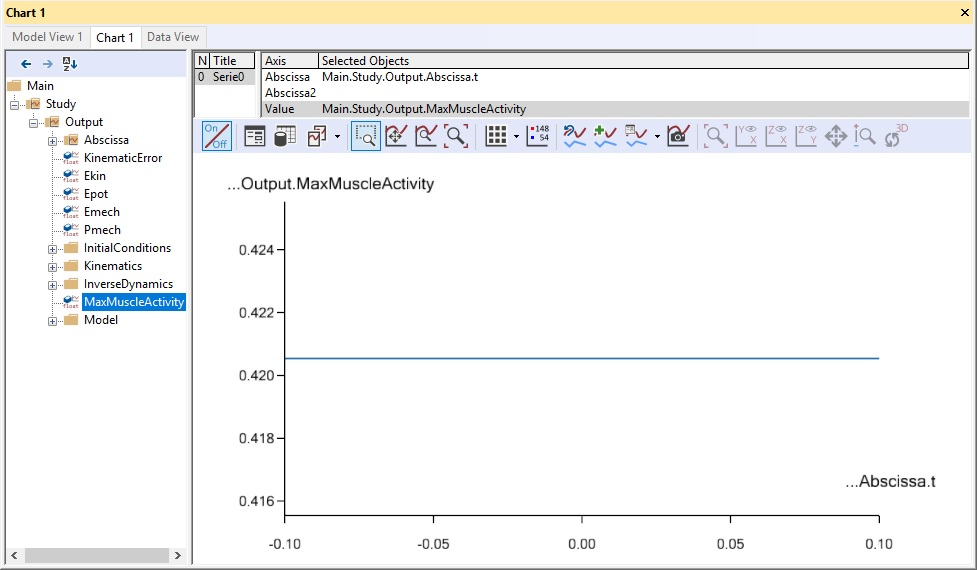
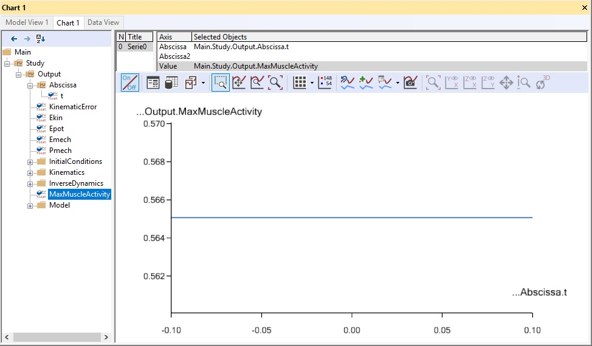

Lesson 1: Joint to Joint Scaling Methods¶
This lesson covers five of the scaling laws available in AnyBody:
ScalingStandard (scale to a standard size)
ScalingNone (do not scale)
ScalingUniform (scale equally in all directions; input is joint to joint distances)
ScalingLengthMass (scale taking mass into account; input is joint to joint distances and mass)
ScalingLengthMassFat (scale taking mass and fat into account; input is joint to joint distances)
ScalingStandard¶
This scaling law produces a model with the default parameters for mass and size (corresponding roughly to the 50th percentile European male). It is used by default for non-specific models, or when there is no data available about the modeled subject. This law does not use the AnyMan file because there is no parameter to modify.
With the AnyBody Modeling System you already have a repository of models available; for details please see the AnyBody Assistant available from the menu. Let us practice, as a starting point for this tutorial, please find this model:
This tutorial has been written using the AnyBody Managed Model Repository Version 2.0 (AMMRV2.0), so you may see differences between the tutorial and your own results.
To use this law you do not need to do anything at all; however, for demonstration purposes scaling law configuration parameter (BM_SCALING) will be set to use the default value:
/*------------- SCALING CONFIGURATION SECTION --------------------*/
// Scaling laws using joint to joint measures
#define BM_SCALING _SCALING_STANDARD_
// #define BM_SCALING _SCALING_NONE_
// #define BM_SCALING _SCALING_UNIFORM_
// #define BM_SCALING _SCALING_LENGTHMASS_
// #define BM_SCALING _SCALING_LENGTHMASSFAT_
// #define BM_SCALING _SCALING_XYZ_
// Scaling laws using external measures
// #define BM_SCALING _SCALING_UNIFORM_EXTMEASUREMENTS_
// #define BM_SCALING _SCALING_LENGTHMASS_EXTMEASUREMENTS_
// #define BM_SCALING _SCALING_LENGTHMASSFAT_EXTMEASUREMENTS_
// Anthropometric data file (unchanged files can be found in AAUHuman\Scaling\AnyFamily)
// #path BM_SCALING_ANTHRO_FILE "Model\AnyFamily\AnyMan.any"
// #path BM_SCALING_ANTHRO_FILE "Model\AnyFamily\AnyManUniform.any"
// #path BM_SCALING_ANTHRO_FILE "Model\AnyFamily\AnyManExternal.any"
// #path BM_SCALING_ANTHRO_FILE "Model\AnyFamily\AnyManExtPercentile.any"
// #path BM_SCALING_ANTHRO_FILE "Model\AnyFamily\AnyWomanExtPercentile.any"
// #path BM_SCALING_ANTHRO_FILE "Model\AnyFamily\AnyWomanExtPercentile.any"
// #path BM_SCALING_ANTHRO_FILE "Model\AnyFamily\AnyManXYZ.any"
//--------------- END OF SCALING CONFIGURATION -------------------
Now load the model and open a Model View window. You will see the standing model with the standard size.
{kind=link}
{kind=link}
ScalingNone¶
This particular scaling law can be used for the studies, which require the unscaled cadaveric datasets, which were used for the construction of the body parts. Please enable _SCALING_NONE_ option in order to switch to this scaling law.
/*------------- SCALING CONFIGURATION SECTION --------------------*/
// Scaling laws using joint to joint measures
#define BM_SCALING _SCALING_NONE_
// #define BM_SCALING _SCALING_UNIFORM_
// #define BM_SCALING _SCALING_LENGTHMASS_
// #define BM_SCALING _SCALING_LENGTHMASSFAT_
// #define BM_SCALING _SCALING_XYZ_
// Scaling laws using external measures
// #define BM_SCALING _SCALING_UNIFORM_EXTMEASUREMENTS_
// #define BM_SCALING _SCALING_LENGTHMASS_EXTMEASUREMENTS_
// #define BM_SCALING _SCALING_LENGTHMASSFAT_EXTMEASUREMENTS_
// Anthropometric data file (unchanged files can be found in AAUHuman\Scaling\AnyFamily)
// #path BM_SCALING_ANTHRO_FILE "Model\AnyFamily\AnyMan.any"
// #path BM_SCALING_ANTHRO_FILE "Model\AnyFamily\AnyManUniform.any"
// #path BM_SCALING_ANTHRO_FILE "Model\AnyFamily\AnyManExternal.any"
// #path BM_SCALING_ANTHRO_FILE "Model\AnyFamily\AnyManExtPercentile.any"
// #path BM_SCALING_ANTHRO_FILE "Model\AnyFamily\AnyWomanExtPercentile.any"
// #path BM_SCALING_ANTHRO_FILE "Model\AnyFamily\AnyWomanExtPercentile.any"
// #path BM_SCALING_ANTHRO_FILE "Model\AnyFamily\AnyManXYZ.any"
The result will not noticeably change as compared to the ScalingStandard, but minor differences can be observed when looking at the actual locations of the muscle attachment sites and so on.
Working with known body part dimensions¶
When modelling a specific person with known anthropometric factors, e.g. weight, height, body part lengths, etc., these details need to be incorporated into the model. In this case _SCALING_STANDARD_ and _SCALING_NONE_ are not applicable, since they correspond to predetermined human sizes and weights, which cannot be overwritten.
For these purpose a number of additional scaling laws were implemented, which all share an input mechanism for subject-specific measurements. This mechanism loads a file, called an AnyMan file, which contains height, weight, fat percentage, and individual segmental measurements or scale factors. This is done by setting a value to the special body configuration variable, BM_SCALING_ANTHRO_FILE. Please enable a predefined AnyMan like shown below:
/*------------- SCALING CONFIGURATION SECTION --------------------*/
// Scaling laws using joint to joint measures
// #define BM_SCALING _SCALING_NONE_
#define BM_SCALING _SCALING_UNIFORM_
// #define BM_SCALING _SCALING_LENGTHMASS_
...
// Anthropometric data file (unchanged files can be found in AAUHuman\Scaling\AnyFamily)
#path BM_SCALING_ANTHRO_FILE "Model\AnyFamily\AnyMan.any"
// #path BM_SCALING_ANTHRO_FILE "Model\AnyFamily\AnyManUniform.any"
...
We have succesfully personalized the model using anthropometric measurements from an existing file. In order to change some dimensions or provide a completely new set of them in your model - please copy this file and make modifications at your model location. One can also find unchanged AnyMan files, that were used in this tutorial in the following folder: AMMR\AAUHuman\Scaling\AnyFamily.
Let’s have a look at the content of the AnyMan file to learn what can be entered.
// File of anthropometric data
// In this file you have to enter the legnth of each segment individualy
AnyVar BMI = BodyMass/(BodyHeight*BodyHeight);
///Estimation from Frankenfield et al. (2001) valid for men
AnyVar FatPercent = (-0.09 + 0.0149*BMI - 0.00009*BMI*BMI)*100;
AnyVar BodyMass = 75 ;
AnyVar BodyHeight = 180 /100;
AnyFolder SegmentMasses = {
//Segment masses in kg from Winter ("Biomechanics and motor control of human movement." David A. Winter)
AnyVar Lumbar = 0.139*.BodyMass; // T12-L1 to L5-Sacrum
AnyVar Thorax = 0.1894*.BodyMass; // C7-T1 to T12-L1 (modified from 0.216 winter to separate scapula)
AnyVar Pelvis = 0.142*.BodyMass;
AnyVar Head = 0.081*.BodyMass; // head and cervical
AnyFolder Right =
{
AnyVar Clavicle = 0.0133*..BodyMass;
AnyVar UpperArm = 0.028*..BodyMass;
AnyVar LowerArm = 0.016*..BodyMass;
AnyVar Hand = 0.006*..BodyMass;
AnyVar Thigh = 0.1*..BodyMass;
AnyVar Shank = 0.0465*..BodyMass;
AnyVar Talus = 0.2*0.0145*..BodyMass; //20% of total foot (from bone volume ratio)
AnyVar Foot = 0.8*0.0145*..BodyMass; //80% of total foot (from bone volume ratio)
};
...
};
AnyFolder SegmentDimensions = {
AnyVar PelvisWidth = 0.176*.BodyHeight/1.75; //distance between hip joints (0.16 for simple leg model)
AnyVar HeadHeight = 0.14*.BodyHeight/1.75;//height in neutral position from C1HatNode to top of head
AnyVar TrunkHeight = 0.620233*.BodyHeight/1.75;//height in neautral position from C1HatNode to L5SacrumJnt
// These two folders are used by the scaling laws
AnyFolder Right =
{
AnyVar UpperArmLength = 0.340079*..BodyHeight/1.75;
AnyVar LowerArmLength =0.2690167*..BodyHeight/1.75;
AnyVar HandLength = 0.182*..BodyHeight/1.75;
AnyVar HandBreadth = 0.085*..BodyHeight/1.75;
AnyVar ThighLength = 0.4098364*..BodyHeight/1.75;
AnyVar ShankLength = 0.4210448*..BodyHeight/1.75;
AnyVar FootLength = 0.2571425*..BodyHeight/1.75;
AnyVar TalusLength = 0.133*FootLength;
};
...
};
You can see that mass and lengths of individual segments are proportional to the provided overall mass and height, and changing these values will change the entire model. It is also possible to change individual lengths in case such data is available. An example will be given in the following section.
But what happens if the BM_SCALING_ANTHRO_FILE variable is not set? The default values will be provided, and these values can be overwritten due to the specifics of the implementation. This creates a slightly different personalization workflow. For example, one can navigate in the Model Tree and select a variable that needs to be defined:
The following line shows how it can be overwritten from, say, the Main folder.
Main.HumanModel.Anthropometrics.BodyMass = 90;
But for this tutorial we will predefined AnyMan files to have an overview of the entire personalization scheme in one place.
ScalingUniform¶
This law allows you to define the total weight of the model and the individual sizes of the bones. The length of each bone is defined as a joint to joint distance and the bone is then scaled in three dimensions proportionally to its length. To use this law you must change the scaling parameter to be _SCALING_UNIFORM_.
In the previous section we showed how this can be done and how an AnyMan file can be set. Please now load the model and have a look at the Model View window. Notice that the body size did not change from the standard scaling version. This is because the default values for segment masses and sizes in this file are the same as the standard values. But if you change them, the model will scale according to your specifications.
Please double-click on the following line to access your AnyMan.any file:
#path BM_SCALING_ANTHRO_FILE "Model\AnyFamily\AnyMan.any"
Let us have a closer look. The total body weight is expressed in
kilograms by the variable Body_Mass at the top of the file:
AnyVar Body_Mass = 75;
Try changing it to 90 kg and load the model again. Once again the size
of the body did not change. In the ScalingUniform law, the Body_Mass
parameter controls the mass of the segments but not their sizes. As shown
previously the overall body mass is distributed to each segment.
So the Body_Mass parameter only controls the segment masses. The size
of the model is controlled by another list of variables defining the
lengths of the different bones. The length of each segment can be set
independently, for example we can increase the length of the thigh
by modifying the corresponding variable:
AnyFolder SegmentDimensions = {
AnyVar PelvisWidth = 0.176*.BodyHeight/1.75; //distance between hip joints (0.16 for simple leg model)
AnyVar HeadHeight = 0.14*.BodyHeight/1.75;//height in neutral position from C1HatNode to top of head
AnyVar TrunkHeight = 0.620233*.BodyHeight/1.75;//height in neautral position from C1HatNode to L5SacrumJnt
// These two folders are used by the scaling laws
AnyFolder Right =
{
AnyVar UpperArmLength = 0.340079*..BodyHeight/1.75;
AnyVar LowerArmLength =0.2690167*..BodyHeight/1.75;
AnyVar HandLength = 0.182*..BodyHeight/1.75;
AnyVar HandBreadth = 0.085*..BodyHeight/1.75;
AnyVar ThighLength = 0.626;
AnyVar ShankLength = 0.4210448*..BodyHeight/1.75;
AnyVar FootLength = 0.2571425*..BodyHeight/1.75;
AnyVar TalusLength = 0.133*FootLength;
};
Load the model again and have a look at the Model View window. The femur bone is now bigger. It has been scaled uniformly in 3 directions according to the defined length. Notice that we only changed the size of the femur and not the other bones, so the femur looks unreasonably big compared to the rest of the body. To avoid results such as this, it is important to feed those variables with consistent data rooted in real anthropometry.
{kind=link}
Let us apply a more reasonable size. Please change the default values to the following set of consistent measures:
AnyFolder SegmentDimensions = {
AnyVar PelvisWidth = 0.180; //distance between hip joints (0.16 for simple leg model)
AnyVar HeadHeight = 0.169;//height in neutral position from C1HatNode to top of head
AnyVar TrunkHeight = 0.754;//height in neautral position from C1HatNode to L5SacrumJnt
// These two folders are used by the scaling laws
AnyFolder Right =
{
AnyVar UpperArmLength = 0.405;
AnyVar LowerArmLength =0.316;
AnyVar HandLength = 0.182*..BodyHeight/1.75;
AnyVar HandBreadth = 0.085*..BodyHeight/1.75;
AnyVar ThighLength = 0.548;
AnyVar ShankLength = 0.551;
AnyVar FootLength = 0.243;
AnyVar TalusLength = 0.133*FootLength;
};
AnyFolder Left =
{
AnyVar UpperArmLength = 0.405;
AnyVar LowerArmLength =0.316;
AnyVar HandLength = 0.182*..BodyHeight/1.75;
AnyVar HandBreadth = 0.085*..BodyHeight/1.75;
AnyVar ThighLength = 0.548;
AnyVar ShankLength = 0.551;
AnyVar FootLength = 0.243;
AnyVar TalusLength = 0.133*FootLength;
};
};
{kind=link}
When you reload the model you should see a tall body and with proportionate sizes of the segments. If you can’t see the difference from the standard size model, notice how the feet are now sticking down below the reference frame.
It should be obvious that this type of scaling requires good anthropometric data to give reasonable results. But such data is not always easily available. So there is a version of the AnyMan file called AnyManUniform.any. This file only takes as input the body mass and the body height and subsequently scales all the segment lengths uniformly according to the defined body height. This may not give you a model where each bone matches a given subject, but it can be a reasonable estimate in cases where only the overall mass and height of the body is known. Try using the AnyManUniform.any file:
//#path BM_SCALING_ANTHRO_FILE "Model\AnyFamily\AnyMan.any"
#path BM_SCALING_ANTHRO_FILE "Model\AnyFamily\AnyManUniform.any"
Now it is easy to scale the body down to represent a small person. Open the AnyManUniform file from the Files tab again and change the mass and height variable as following:
AnyFolder AnthroData = {
AnyVar Body_Mass = 60;
AnyVar body_height = 165/100;
When you load the model you will see all the segments automatically scaling down. The mass is also scaled, but as we said previously this is not visible graphically with this scaling law.
Scaling based on length and mass¶
This law scales the size of the body according not only to the segment
lengths but also to the segments masses, so unlike the ScalingUniform
law it provides the opportunity to define tall and skinny people or
small and squat people. Like in the ScalingUniform law, the total body
mass is defined by the variable Body_Mass. Just as previously, this
total mass is then divided between the segments by means of
coefficients, but the size scaling is different. Let us investigate it.
In the main file, please choose the ScalingLengthMass law and switch
back to the AnyMan file:
// Scaling laws using joint to joint measures
//#define BM_SCALING CONST_SCALING_UNIFORM
#define BM_SCALING CONST_SCALING_LENGTHMASS
// #define BM_SCALING CONST_SCALING_LENGTHMASSFAT
...
// Anthropometric data file (unchanged files can be found in AAUHuman\Scaling\AnyFamily)
#path BM_SCALING_ANTHRO_FILE "Model\AnyFamily\AnyMan.any"
// #path BM_SCALING_ANTHRO_FILE "Model\AnyFamily\AnyManUniform.any"
...
In the AnyMan file, switch back the segment length values to the initial ones and increase the body mass to 110 kg:
AnyVar Body_Mass = 110;
...
AnyFolder SegmentDimensions = {
AnyVar PelvisWidth = 0.176*.BodyHeight/1.75; //distance between hip joints (0.16 for simple leg model)
AnyVar HeadHeight = 0.14*.BodyHeight/1.75;//height in neutral position from C1HatNode to top of head
AnyVar TrunkHeight = 0.620233*.BodyHeight/1.75;//height in neautral position from C1HatNode to L5SacrumJnt
// These two folders are used by the scaling laws
AnyFolder Right =
{
AnyVar UpperArmLength = 0.340079*..BodyHeight/1.75;
AnyVar LowerArmLength =0.2690167*..BodyHeight/1.75;
AnyVar HandLength = 0.182*..BodyHeight/1.75;
AnyVar HandBreadth = 0.085*..BodyHeight/1.75;
AnyVar ThighLength = 0.4098364*..BodyHeight/1.75;
AnyVar ShankLength = 0.4210448*..BodyHeight/1.75;
AnyVar FootLength = 0.2571425*..BodyHeight/1.75;
AnyVar TalusLength = 0.133*FootLength;
};
AnyFolder Left =
{
AnyVar UpperArmLength = 0.340079*..BodyHeight/1.75;
AnyVar LowerArmLength =0.2690167*..BodyHeight/1.75;
AnyVar HandLength = 0.182*..BodyHeight/1.75;
AnyVar HandBreadth = 0.085*..BodyHeight/1.75;
AnyVar ThighLength = 0.4098364*..BodyHeight/1.75;
AnyVar ShankLength = 0.4210448*..BodyHeight/1.75;
AnyVar FootLength = 0.2571425*..BodyHeight/1.75;
AnyVar TalusLength = 0.133*FootLength;
};
Load the model and look at the Model View. Our model looks strange! The body is deformed and looks a bit like a Neanderthal.
 {kind=link}
{kind=link}
What really happens is that the ScalingLengthMass law scales the sizes of the segments according to their masses, but only in two directions. The third scaling direction is controlled by the segment length variables. Unlike in the ScalingUniform law, the segment length variables just control one scaling direction and not the two others.
So to have a normal-looking model we have to adjust segment mass and length simultaneously. As the mass we defined is 110 kg, a height of 1.98 m could be reasonable. As we do not have a clear idea of the individual segment lengths, we shall simply multiply all of them by a single coefficient (it is also a good opportunity to use the AnyManUniform file and directly enter the 1.98 m height, you can try it). The initial segment lengths correspond to a body of 1.80 m, so the ratio we are going to multiply the segment length with is 1.1. Let’s add a scale factor variable and multiply all dimensions using this one:
AnyFolder SegmentDimensions = {
AnyVar ScaleFactor = 1.1;
AnyVar PelvisWidth = 0.176*ScaleFactor; //distance between hip joints (0.16 for simple leg model)
AnyVar HeadHeight = 0.14*ScaleFactor;//height in neutral position from C1HatNode to top of head
AnyVar TrunkHeight = 0.620233*ScaleFactor;//height in neautral position from C1HatNode to L5SacrumJnt
// These two folders are used by the scaling laws
AnyFolder Right =
{
AnyVar UpperArmLength = 0.340079*.ScaleFactor;
AnyVar LowerArmLength =0.2690167*.ScaleFactor;
AnyVar HandLength = 0.182*.ScaleFactor;
AnyVar HandBreadth = 0.085*.ScaleFactor;
AnyVar ThighLength = 0.4098364*.ScaleFactor;
AnyVar ShankLength = 0.4210448*.ScaleFactor;
AnyVar FootLength = 0.2571425*.ScaleFactor;
AnyVar TalusLength = 0.133*FootLength;
};
AnyFolder Left =
{
AnyVar UpperArmLength = 0.340079*.ScaleFactor;
AnyVar LowerArmLength =0.2690167*.ScaleFactor;
AnyVar HandLength = 0.182*.ScaleFactor;
AnyVar HandBreadth = 0.085*.ScaleFactor;
AnyVar ThighLength = 0.4098364*.ScaleFactor;
AnyVar ShankLength = 0.4210448*.ScaleFactor;
AnyVar FootLength = 0.2571425*.ScaleFactor;
AnyVar TalusLength = 0.133*FootLength;
};
};
{kind=link}
{kind=link}
When you load the model you will see a more Homo sapiens-looking figure corresponding to a large 110kg and 1.98 m person.
We mentioned at the beginning of the tutorial that the muscle strength is also scaled. It is time to have a look at it and compare muscle forces from different scaled models. To do so we need a body with muscles. Please add the muscles by commenting out the following section of the general configuration block:
//#ifndef BM_LEG_MUSCLES_BOTH
// #define BM_LEG_MUSCLES_BOTH _MUSCLES_NONE_
//#endif
//#ifndef BM_ARM_MUSCLES_BOTH
// #define BM_ARM_MUSCLES_BOTH _MUSCLES_NONE_
//#endif
//#ifndef BM_TRUNK_MUSCLES
// #define BM_TRUNK_MUSCLES _MUSCLES_NONE_
//#endif
We also need to add some forces to the model in order to make it react and see muscle activity. This can be done by adding the following lines to the Environment.any file. This piece of code creates a force of 50 N on each hand and displays it in the model view:
AnyFolder Environment = {
AnyFixedRefFrame GlobalRef = {Origin = {0.0,0.0,0.0};};
};
AnyForce3D RightHandLoad = {
F = {0, -50, 0};
AnyRefFrame &Hand = Main.HumanModel.BodyModel.Right.ShoulderArm.Seg.Glove;
};
AnyForce3D LeftHandLoad = {
F = {0, -50, 0};
AnyRefFrame &Hand = Main.HumanModel.BodyModel.Left.ShoulderArm.Seg.Glove;
};
AnyDrawVector DrawRightLoad = {
Vec = .RightHandLoad.F*0.015;
PointAway = On;
GlobalCoord = On;
Line = {
Style = Line3DStyleFull;
Thickness = 0.01;
RGB = {0, 0, 0};
End = {
Style = Line3DCapStyleArrow;
RGB = {0, 0, 0};
Thickness = 0.025;
Length = 0.025;
};
};
AnyRefFrame &Hand = .RightHandLoad.Hand;
};
AnyDrawVector DrawLeftLoad = {
Vec = .LeftHandLoad.F*0.015;
PointAway = On;
GlobalCoord = On;
Line = {
Style = Line3DStyleFull;
Thickness = 0.01;
RGB = {0, 0, 0};
End = {
Style = Line3DCapStyleArrow;
RGB = {0, 0, 0};
Thickness = 0.025;
Length = 0.025;
};
};
AnyRefFrame &Hand = .LeftHandLoad.Hand;
};
{kind=link}
We are now ready to run an inverse dynamic analysis with our large 110kg model. Please load the model and run the RunApplication operation from the Operations tab. Then open a chart window to investigate the results. By browsing your way to the MaxMuscleActivity in Main.Study you should get the following value:
We will now try to model a small person to compare his muscle activity with the one we have just plotted. In the AnyMan file let us enter the parameters for a 65kg and 1.70 m person:
AnyVar Body_Mass = 65 ;
AnyVar body_height = 170 /100;
...
AnyFolder SegmentDimensions = {
AnyVar ScaleFactor = 0.95;
We can load the model, run the inverse dynamics analysis and check the resultant value.
For the same load on the hands (50 N) the tall heavy model has a muscle activity of 42.1 %, whereas the short model reaches 56.5 % of muscle activity. So our small model is definitely weaker than the tall one.
ScalingLengthMassFat¶
Most scaled models used for practical investigations use the ScalingLengthMassFat law. It works exactly like the ScalingLengthMass but with an additional parameter: It takes the fat percentage of the body into account. The argument is that the fat percentage adds to the mass of each segment and in the ScalingLengthMass law would lead an estimation of more muscle tissue rather than fat tissue. So the fat percentage in this scaling model does not modify the mass or the size of the body. It is only used to calculate the strength of the muscles. Between two persons of similar segment masses, the one with higher fat percentage will have less muscle strength, because the volume otherwise occupied by the muscles is replaced by inactive fat.
So the mass and size scales are controlled as in the ScalingLengthMass
model by the Body_Mass variable and all the segment length variables
respectively. The fat percentage is controlled in concert by the
variables Body_Height and Body_Mass. These two variables are used to
calculate the BMI (Body-Mass Index), and the BMI is used to calculate
the fat percentage of the body according to Frankenfield, D. C.; Rowe,
W. A.; Cooney, R. N.; Smith, J. S. & Becker, D. (2001): Limits of body
mass index to detect obesity and predict body composition, Nutrition
17(1), 26-30.
AnyVar BMI = AnthroData.Body_Mass/(AnthroData.body_height*AnthroData.body_height);
AnyVar FatPercent = (-0.09 + 0.0149*BMI - 0.00009 *BMI*BMI)*100; //Estimation from Frankenfield et al. (2001) valid for men
Obviously it is important to input the correct height of the body when using this law. Please notice, however, that it is very easy for the user to substitute the formula for the fat percentage by another equation or possibly by a fixed number for modeling of a particular individual for whom the fat percentage has been measured directly.
The resultant value for the fat percentage is then directly used to compute an estimate of the strength of each muscle in the model.
This advanced strength scaling makes a significant difference for the model that is short and heavy. The ScalingLengthMass law tends to over-estimate the strength of those models, because they often have a high fat percentage that is not taken into account by the law.
We will try to illustrate this by plotting the muscle activity of the same short and heavy model with both ScalingLengthMass and ScalingLengthMassFat laws. We will begin by adjusting the AnyMan file to match a 90kg and 1.70 m person:
AnyVar Body_Mass = 90;
Then please load the model and re-run the application. Notice that we should still be using the ScalingLengthMass law. You should now get the following value for the maximum muscle activity.
The next step is to run an analysis with the same body but with the ScalingLengthMassFat law:
// Scaling laws using joint to joint measures
// #define BM_SCALING CONST_SCALING_UNIFORM
// #define BM_SCALING CONST_SCALING_LENGTHMASS
#define BM_SCALING CONST_SCALING_LENGTHMASSFAT
Once again load the model and run the inverse dynamics analysis by executing the RunApplication operation. We should get the following results:
If we compare these two activity values, the difference is clear. The ScalingLengthMassFat law is increasing the muscle activity by approximately 13 % in this case, from 43 % to 56 %. This shows the limits of the ScalingLengthMass law for extreme cases. ScalingLengthMassFat is able to cover a wider range of cases while keeping its accuracy.
Just like the ScalingLengthMass law this law can also be used with the AnyManUniform file.
This completes scaling Lesson 1: Joint to joint scaling methods.
See also
Next lesson: Lesson 2: Scaling based on External Body Measurements.